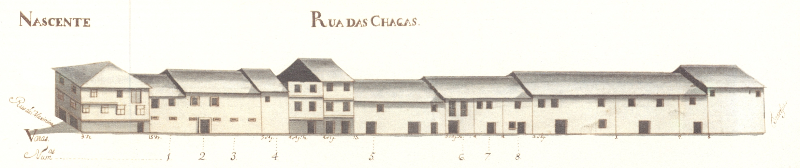

Número: 18
Nome: Rua das Chagas

Rua das Chagas - nascente
Artéria secundária, de origem romana, ligava a rua das Travessas com a rua
de Maximinos.
Aberta em data indeterminada da Idade Média, tinha, em 1750, uma estranha feição
pelo aspecto cego que lhe era dado pelas portadas de madeira que protegiam 83,5%
de todas as suas janelas.
Com casas de aspeto pobre, muitas delas sobradadas, só nos gavetos apresentava
construções mais ricas. Curioso é, contudo, o enorme bloco, de empena e telhado comuns,
que ocupa quase toda a metade Norte do lado Nascente da rua e quase lembra um prédio
de rendimento dos nossos dias.
Chamada primeiro de Triparia, devido ao tipo de carne que aqui se vendia, passou
a partir de 1593 a ser conhecida pelo nome actual de rua das Chagas.
Hoje está bastante alterada. Com o alargamento das ruas Verde, de Maximinos
e das Travessas, muitos dos seus prédios foram destruídos, principalmente os
situados no lado Poente e no extremo Norte do lado oposto. Assim a rua foi muito
encurtada e deixou de desembocar na rua de Maximinos, passando a ter o seu limite na rua
D. Frei Caetano Brandão. A zona que não foi mexida, mantém, contudo, a sua feição arcaica.
Das 10 casas do lado Nascente e 13 do Poente, são prazos do Cabido 5 e 3 respetivamente.
Lista de Casas
- Casa:
- Número: 1
- Enfiteuta: D. Inácia Gomes da Costa
- Foro: 180 reis e 2 galinhas
- Desc: A enfiteuta é filha do Dr. Manuel Gomes da Costa.
A serventia dá-se pelo n.º 8 da Rua de Maximinos.
Confronta, do norte, com casa foreira à Igreja de Santiado da Cividade.
- Casa:
- Número: 2
- Enfiteuta: D. Inácia Gomes da Costa
- Foro: 140 reis e 2 galinhas
- Desc:
- Casa:
- Número: 3
- Enfiteuta: D. Inácia Gomes da Costa
- Foro: 240 reis e 2 galinhas
- Desc:
- Casa:
- Número: 4
- Enfiteuta:
- Foro:
- Desc: Pertence ao n.º 8 da Rua de Maximinos, para onde tem a frontaria e serventia
principais.
Confronta do sul com casa foreira à Mitra.
- Casa:
- Número: 5
- Enfiteuta: D. Inácia Gomes da Costa
- Foro: 340 reis e 2 galinhas
- Desc: Confronta, do norte, com casa foreira ao Hospital de Real e, do sul,
com casa foreira ao Hospital de S. Marcos.
- Casa:
- Número: 6
- Enfiteuta:
Os herdeiros de D. Mariana de Castro, viúva de Jacinto de Magalhães e Meneses,
fidalgo da Casa Real e Cavaleiro da Ordem de Cristo
- Foro: 160 reis e 2 galinhas
- Desc: Entre os anos de 1508 e 1597 a casa n.º 7 esteve
unida a este prazo.
- Casa:
- Número: 7
- Enfiteuta: Bento Leite Pereira
- Foro: 160 reis e 2 galinhas
- Desc: O enfiteuta é filho de António Pereira.
- Casa:
- Número: 8
- Enfiteuta: Os herdeiros de D. Mariana de Castro
- Foro: 60 reis e 1 galinha
- Desc: Confronta, do sul, com casa foreira ao Hospital de S. Marcos.
- Casa:
- Número: 9
- Enfiteuta: António Fernandes, da Rua Nova
- Foro: 2 galinhas
- Desc:
- Casa:
- Número: 10 e 11
- Enfiteuta: Miguel Soares, sapateiro, da Rua dos Sapateiros
- Foro: 110 reis e 2 galinhas
- Desc: O enfiteuta é filho de Bento Soares. As casas encontram-se unidas, num só
prazo, desde o ano de 1602.
- Casa:
- Número: 12
- Enfiteuta:
- Foro:
- Desc: Corresponde ao n.º 10 da Rua de Maximinos, para onde tem a frontaria
e serventia principais.